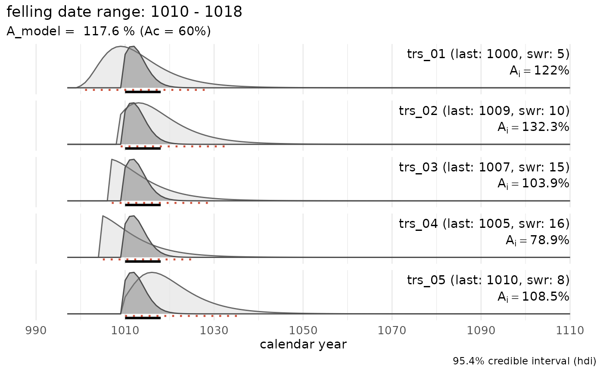
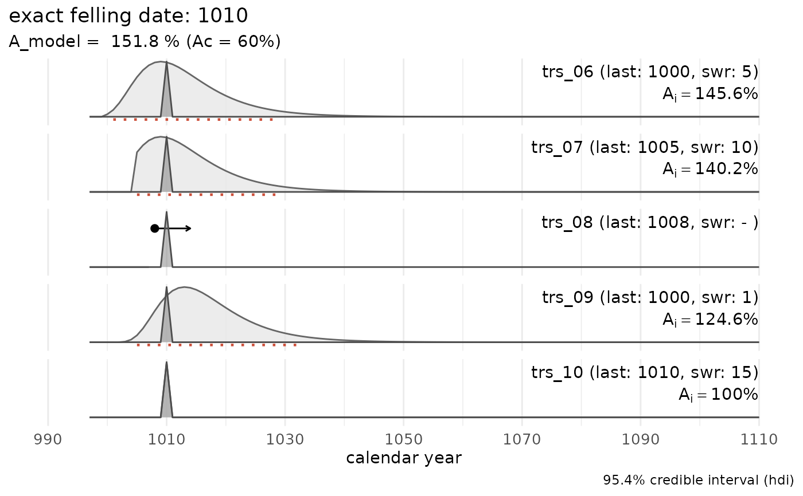

Compute a single felling date range by combining multiple sapwood estimates
Source:R/sw_combine.R
sw_combine.RdThis function assesses whether it is possible to combine multiple sapwood estimates into a single felling date range.
Usage
sw_combine(
x,
series = "series",
last = "last",
n_sapwood = "n_sapwood",
waneyedge = "waneyedge",
sw_data = "Hollstein_1980",
densfun = "lognormal",
cred_mass = 0.954,
hdi = TRUE,
plot = FALSE
)Arguments
- x
A
data.framewith at least four columns, providing information on the ID's of the tree-ring series, the number of sapwood rings observed, the presence of waney edge and the calendar date assigned to the last measured ring. A column describing the sapwood data set to be used for modelling and the computation of the hdi can be provided as well.- series
Name of the column in
xwhere ID's of the tree-ring series are listed ascharactervalues.- last
Name of the column in
xwhere calendar years assigned to the last measured ring are listed (should benumeric).- n_sapwood
Name of the column in
xwhere the number of observed sapwood rings are listed (should benumeric).- waneyedge
Name of the column in
xindicating the presence (TRUE)/absence (FALSE) of waney edge (should be alogicalvector).- sw_data
The name of the sapwood data set to use for modelling. It should be one of the data sets listed in
sw_data_overview(), or the name of adata.framewith sapwood data in columnsn_sapwoodandcount.- densfun
Name of the density function fitted to the sapwood data set. Should be one of:
lognormal (the default value),
normal,
weibull,
gammma.
- cred_mass
A
scalar [0, 1]specifying the mass within the credible interval (default = .954).- hdi
A
logicalparameter. IfTRUE, the lower and upper limit of the highest density interval (credible interval) is given for the combined felling date. WhenFALSE, a matrix is returned with scaled p values for calendar years covering the combined estimate of the felling date range.- plot
A
logicalparameter. IfTRUEa ggplot-plot style graph is returned of the individual and combined estimate of the felling date. IfFALSE, a list with numeric output of the modelling process is returned.
Value
Depends on the value of plot. If TRUE a ggplot-style is returned,
when FALSE a list with the combined probability ($raw_data$comb),
the modelling parameters ($sapwood_data, $sapwood_model, $cred_mass),
the Highest Posterior Density Interval for combined combined felling date
interval ($hdi_combine), and the Agreement indices for the model ($A_model)
and individual series ($individual_series$agr_index).
The rationale of the agreement index is outlined by Bronk Ramsey (1995; 2009)
References
Bronk Ramsey, C. (1995) Radiocarbon calibration and analysis of stratigraphy: the OxCal program. Radiocarbon 37, 425–430. https://doi.org/10.1017/S0033822200030903
Bronk Ramsey, C. (2009) Bayesian analysis of radiocarbon dates. Radiocarbon 51, 337–360. https://doi.org/10.1017/S0033822200033865
Examples
# a data set in which all series have preserved sapwood
sw_combine(trs_example1, plot = TRUE)

# a data set in which one series has an exact felling date (= waney edge preserved)
trs_example2
#> series last n_sapwood waneyedge
#> 1 trs_06 1000 5 FALSE
#> 2 trs_07 1005 10 FALSE
#> 3 trs_08 1008 NA FALSE
#> 4 trs_09 1000 1 FALSE
#> 5 trs_10 1010 15 TRUE
sw_combine(trs_example2, plot = TRUE)

# a data set in which multiples series have an exact felling date
trs_example3
#> series last n_sapwood waneyedge
#> 1 trs_11 1000 5 TRUE
#> 2 trs_12 1005 10 TRUE
#> 3 trs_13 1008 NA TRUE
#> 4 trs_14 1000 1 TRUE
#> 5 trs_15 1010 NA TRUE
sw_combine(trs_example3, plot = FALSE)
#> $raw_data
#> year trs_11 trs_12 trs_13 trs_14 trs_15 comb
#> 1 997 0 0 0 0 0 0
#> 2 998 0 0 0 0 0 0
#> 3 999 0 0 0 0 0 0
#> 4 1000 1 0 0 1 0 1
#> 5 1001 0 0 0 0 0 0
#> 6 1002 0 0 0 0 0 0
#> 7 1003 0 0 0 0 0 0
#> 8 1004 0 0 0 0 0 0
#> 9 1005 0 1 0 0 0 1
#> 10 1006 0 0 0 0 0 0
#> 11 1007 0 0 0 0 0 0
#> 12 1008 0 0 1 0 0 1
#> 13 1009 0 0 0 0 0 0
#> 14 1010 0 0 0 0 1 1
#> 15 1011 0 0 0 0 0 0
#> 16 1012 0 0 0 0 0 0
#> 17 1013 0 0 0 0 0 0
#> 18 1014 0 0 0 0 0 0
#> 19 1015 0 0 0 0 0 0
#> 20 1016 0 0 0 0 0 0
#> 21 1017 0 0 0 0 0 0
#> 22 1018 0 0 0 0 0 0
#> 23 1019 0 0 0 0 0 0
#> 24 1020 0 0 0 0 0 0
#> 25 1021 0 0 0 0 0 0
#> 26 1022 0 0 0 0 0 0
#> 27 1023 0 0 0 0 0 0
#> 28 1024 0 0 0 0 0 0
#> 29 1025 0 0 0 0 0 0
#> 30 1026 0 0 0 0 0 0
#> 31 1027 0 0 0 0 0 0
#> 32 1028 0 0 0 0 0 0
#> 33 1029 0 0 0 0 0 0
#> 34 1030 0 0 0 0 0 0
#> 35 1031 0 0 0 0 0 0
#> 36 1032 0 0 0 0 0 0
#> 37 1033 0 0 0 0 0 0
#> 38 1034 0 0 0 0 0 0
#> 39 1035 0 0 0 0 0 0
#> 40 1036 0 0 0 0 0 0
#> 41 1037 0 0 0 0 0 0
#> 42 1038 0 0 0 0 0 0
#> 43 1039 0 0 0 0 0 0
#> 44 1040 0 0 0 0 0 0
#> 45 1041 0 0 0 0 0 0
#> 46 1042 0 0 0 0 0 0
#> 47 1043 0 0 0 0 0 0
#> 48 1044 0 0 0 0 0 0
#> 49 1045 0 0 0 0 0 0
#> 50 1046 0 0 0 0 0 0
#> 51 1047 0 0 0 0 0 0
#> 52 1048 0 0 0 0 0 0
#> 53 1049 0 0 0 0 0 0
#> 54 1050 0 0 0 0 0 0
#> 55 1051 0 0 0 0 0 0
#> 56 1052 0 0 0 0 0 0
#> 57 1053 0 0 0 0 0 0
#> 58 1054 0 0 0 0 0 0
#> 59 1055 0 0 0 0 0 0
#> 60 1056 0 0 0 0 0 0
#> 61 1057 0 0 0 0 0 0
#> 62 1058 0 0 0 0 0 0
#> 63 1059 0 0 0 0 0 0
#> 64 1060 0 0 0 0 0 0
#> 65 1061 0 0 0 0 0 0
#> 66 1062 0 0 0 0 0 0
#> 67 1063 0 0 0 0 0 0
#> 68 1064 0 0 0 0 0 0
#> 69 1065 0 0 0 0 0 0
#> 70 1066 0 0 0 0 0 0
#> 71 1067 0 0 0 0 0 0
#> 72 1068 0 0 0 0 0 0
#> 73 1069 0 0 0 0 0 0
#> 74 1070 0 0 0 0 0 0
#> 75 1071 0 0 0 0 0 0
#> 76 1072 0 0 0 0 0 0
#> 77 1073 0 0 0 0 0 0
#> 78 1074 0 0 0 0 0 0
#> 79 1075 0 0 0 0 0 0
#> 80 1076 0 0 0 0 0 0
#> 81 1077 0 0 0 0 0 0
#> 82 1078 0 0 0 0 0 0
#> 83 1079 0 0 0 0 0 0
#> 84 1080 0 0 0 0 0 0
#> 85 1081 0 0 0 0 0 0
#> 86 1082 0 0 0 0 0 0
#> 87 1083 0 0 0 0 0 0
#> 88 1084 0 0 0 0 0 0
#> 89 1085 0 0 0 0 0 0
#> 90 1086 0 0 0 0 0 0
#> 91 1087 0 0 0 0 0 0
#> 92 1088 0 0 0 0 0 0
#> 93 1089 0 0 0 0 0 0
#> 94 1090 0 0 0 0 0 0
#> 95 1091 0 0 0 0 0 0
#> 96 1092 0 0 0 0 0 0
#> 97 1093 0 0 0 0 0 0
#> 98 1094 0 0 0 0 0 0
#> 99 1095 0 0 0 0 0 0
#> 100 1096 0 0 0 0 0 0
#> 101 1097 0 0 0 0 0 0
#> 102 1098 0 0 0 0 0 0
#> 103 1099 0 0 0 0 0 0
#> 104 1100 0 0 0 0 0 0
#> 105 1101 0 0 0 0 0 0
#> 106 1102 0 0 0 0 0 0
#> 107 1103 0 0 0 0 0 0
#> 108 1104 0 0 0 0 0 0
#> 109 1105 0 0 0 0 0 0
#> 110 1106 0 0 0 0 0 0
#> 111 1107 0 0 0 0 0 0
#> 112 1108 0 0 0 0 0 0
#> 113 1109 0 0 0 0 0 0
#> 114 1110 0 0 0 0 0 0
#>
#> $sapwood_data
#> [1] "Hollstein_1980"
#>
#> $sapwood_model
#> [1] "lognormal"
#>
#> $cred_mass
#> [1] 0.954
#>
#> $hdi_model
#> lower upper p
#> 1 6 34 0.9561277
#>
#> $hdi_combine
#> lower upper
#> NA NA
#>
#> $individual_series
#> series last n_sapwood waneyedge lower upper agr_index
#> 1 trs_11 1000 5 TRUE NA 1000 NA
#> 2 trs_12 1005 10 TRUE NA 1005 NA
#> 3 trs_13 1008 NA TRUE NA 1008 NA
#> 4 trs_14 1000 1 TRUE NA 1000 NA
#> 5 trs_15 1010 NA TRUE NA 1010 NA
#>
#> $A_model
#> Overall agreement index (%)
#> NA
#>
#> $A_c
#> Critical threshold (%)
#> NA
#>
#> $model_summary
#> [1] "multiple felling dates: 1000, 1005, 1008, 1010"
#>